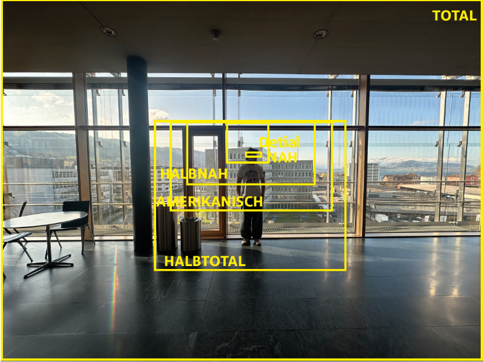

14.01.2025
Heute haben wir mit dem neuen Modul begonnen. Remy hat uns die Inhalte und Ziele des Projekts vorgestellt. Dabei haben wir einen Überblick über die verschiedenen Themen erhalten, die wir in den kommenden Wochen bearbeiten werden. Besonders spannend fand ich die ersten Einblicke in die technischen Anforderungen und die geplante Umsetzung gemacht. Wir haben uns Videos über folgende Begriffe angeschaut:
- Sensor: speichert, empfängt die Lichtsignale
- Objektiv: bündelt das Licht zum Sensor
- Blende: bestimmt die Lichtmenge, die in die Kamera gelangt
- Brennweite: ist der ,,Zoom”, bestimmt, wie weit die Kamera etwas fotografiert
- Verschlusszeit: Zeit, wie lange Licht auf den Sensor fällt
- ISO: steuert Lichtempfindlichkeit
- Weissabgleich: balanciert die Farbstiche
- Crop-Faktor: Unterschied zur originalen Sensorgrösse
Wir haben zudem erste Ideen für unsere eigenen Fotoprojekte gesammelt. Zum Abschluss haben wir erste Testaufnahmen mit unterschiedlichen Kameraeinstellungen gemacht. Die Fachbegriffe muss ich bestimmt noch einmal durcharbeiten und vertiefen. Ich freue mich mega aufs Umsetzen dieses Projektes.
21.01.2025
Heute haben wir uns näher mit den Grundlagen der Fotografie und Kameratechnik beschäftigt. Wir haben gelernt, welche Einstellungen wie ISO, Blende und Verschlusszeit für eine optimale Belichtung notwendig sind. Dabei konnten wir an verschiedenen Beispielbildern sehen, wie sich diese Werte auf das Endergebnis auswirken. Besonders interessant fand ich die Erklärung zur Tiefenschärfe und wie sie durch unterschiedliche Blendenwerte beeinflusst wird. Wenn der ISO zu hoch ist, kann das Bild schnell unscharf werden. Umso kürzer die Verschlusszeit ist, desto dunkler wird das Bild. Je offener die Blende, desto schlechter ist die Tiefenschärfe. Ich finde, nach dieser Lektion verstehe ich die Kameraeinstellungen besser und kann sie in der Zukunft auch gut in der Praxis anwenden.
28.01.2025
Heute haben wir uns intensiv mit dem Thema Beleuchtung beschäftigt. Im LearningLab haben wir das Kameraset aufgebaut und verschiedene Lichtquellen getestet. Dabei haben wir gelernt, wie die Platzierung von Hauptlicht, Fülllicht und Rücklicht die Bildwirkung beeinflusst. Besonders spannend fand ich die Anwendung von Diffusoren und Reflektoren, um Schatten weicher zu machen. Ausserdem mussten wir eine Beleuchtungsskizze anfertigen, um unser Licht-Setup zu planen. Ich habe erkannt, wie wichtig es ist, die Lichtverhältnisse schon vor dem Shooting zu analysieren. Durch die praktischen Übungen konnte ich mein Verständnis für Lichtführung deutlich verbessern. Trotzdem muss ich das Ganze sicher nochmals repetieren, da ich noch nicht ganz sicher bin. Vielleicht muss ich mal in der Praxis das Ganze alleine durchführen, um es in den ,,Griff” zu bekommen.
18.02.2025
Heute haben wir zu Beginn wieder eine Übung mit Kameraeinstellungen (ISO, Blende, usw.) und einer Belichtungsart (wir hatten Tageslicht) gemacht. Wir mussten mehrere Arten von Kameraeinstellungen ausprobieren und unsere Erkenntnisse aufschreiben. Heute war auch der Deadline-Day von der Projektidee. Ich habe mich für „RarCars“ entschieden. Das ist eine Autohandelfirma von meinem Grossvater, welche mehrere Oldtimer-Autos besitzt. Ich muss jetzt nur noch schauen, wie ich die Bilder umsetze. Ich habe heute auch noch mit dem Zeitplan auf Excel gestartet. Bei Excel habe ich ein bisschen Probleme mit der Zeitspanne, deswegen muss ich den Zeitplan wahrscheinlich anders darstellen. Alles in allem bin ich extrem erleichtert, dass ich mein Thema gefunden habe und freue mich schon auf das Umsetzen.
25.02.2025
Heute habe ich in der ersten Lektion die Preproduction (Moodboard, Locationplanung etc.) angeschaut. Wir mussten dabei verschiedene Bilder im Lightroom bearbeiten. Wir haben zudem die Funktion einer RAW-Datei besprochen.
Eine RAW-Datei ist eine unbearbeitete Datei, auf welcher man gut Fotos bearbeiten kann. Wie der Name schon verrät, ist es eine Roh-Datei. Das Negative an einer RAW-Datei ist aber die Dateigrösse und dass man sie zuerst bearbeiten MUSS, bevor man sie bei anderen Sachen verwenden/verschicken kann. Ich habe in der zweiten Lektion an meinem Zeitplan weitergearbeitet.
11.03.2025
In der heutigen Lektion durften wir als Übung wieder rausgehen, um uns zu fotografieren. Ich merke bei jedem Mal, dass ich mich ein Mü verbessert habe als zuvor. Ich sammle sicher wertvolle Erfahrung im Unterricht, wenn ich die Möglichkeit bekomme, das Ganze auszuprobieren. Als ich die Fotos gemacht habe, habe ich sie auf Lightroom bearbeitet und danach auf Photoshop verschiedene Effekte wie KI und verschiedene Pinsel ausprobiert. Ich bin aber nicht ganz fertig geworden, da ich angefangen habe, am Moodboard zu arbeiten. Ich habe anfangs ein bisschen random Bilder ausgesucht und ein paar Farben, welche meiner Meinung nach passen und welche auch auf die Autos zutreffen, welche ich fotografieren werde, hinzugefügt. Fertig wurde ich nicht.
18.03.2025
Heute habe ich den Zeitplan sowie das Moodboard abgeschlossen. Den Zeitplan habe ich nur von der Funktionalität her, jedoch muss ich ihn noch optisch besser darstellen. Zudem habe ich eine Prüfung gehabt, die meiner Meinung nach gut gelaufen ist. In der heutigen ersten Lektion hatte ich zuerst den Theorietest über Grundlagen der Fotografie (ISO, Blende, Verschlusszeit,…). Der Test ist mir meiner Meinung nach gut gelungen und ich denke, dass ich mich jetzt mit den Kameraeinstellungen besser denn je auskenne. Jetzt muss ich einfach ein bisschen mehr Erfahrung sammeln. Ich werde diesen Samstag auch mein erstes Shooting machen. Ich habe in der zweiten Lektion heute den Zeitplan abgeschlossen und mir weitere Inspirationsbilder für das Moodboard ausgesucht.
25.03.2025
Heute habe ich gelernt, dass Licht eine elektromagnetische Welle ist, die sich mit etwa 300'000 km/s bewegt und in einem bestimmten Wellenlängenbereich als Farben sichtbar wird. Ich verstehe nun den Unterschied zwischen Schallwellen und Lichtwellen: z. B. warum man den Donner erst nach dem Blitz hört. Besonders spannend fand ich das Doppelspalt-Experiment, bei dem gezeigt wird, dass Licht sowohl Wellen- als auch Teilcheneigenschaften hat. Ausserdem habe ich gelernt, dass die Wellenlänge und das Medium die Ausbreitung von Wellen beeinflussen. Da ich letzten Samstag auch mein erstes (von zwei) Shooting hatte, hatte ich auch noch Zeit mit der Aussortierung der Fotos. Im Shooting habe ich mal alle Autos in der Garage fotografiert und denke, dass ich sicher 2–3 Shots für die Abgabe brauchen kann. Das nächste Shooting werde ich draussen durchführen. Insgesamt finde ich, war das Fotografieren in der Garage eine gute Übung für mich, die Autos kennenzulernen und Perspektiven auszuprobieren.
01.04.2025
Heute habe ich mich intensiv mit verschiedenen Kameraperspektiven beschäftigt. Ich habe die verschiedenen Perspektiven wie Total, Halbtotale, Amerikanische, Halbnah, Nah und Detail betrachtet und dazu auch eine Skizze angefertigt. Ich fand das sehr spannend, weil es sicher auch wichtig für zukünftige Projekte ist. Ziel war es, diese Perspektiven besser zu verstehen und sie in der Praxis anwenden zu können. Ich habe dabei die Bedeutung der Perspektive für die Bildkomposition und die Wirkung auf den Betrachter reflektiert. Hier ein Bild, wobei man alle Perspektiven sieht.

08.04.2025
Heute haben wir als Erstes die zehn Fotografie-Tipps von Rémy angeschaut. Diese hat er uns auf Campus verlinkt. Die Tipps helfen uns, bessere Fotos für unser Kombiprojekt zu machen. Ich werde einige davon direkt beim Fotografieren meiner Oldtimer ausprobieren.
- Zeit nehmen: nicht einfach drauflos knipsen, sondern bewusst fotografieren.
- Bildidee haben: vor dem Fotografieren überlegen, was das Bild aussagen soll.
- Referenzbilder suchen: Inspiration holen auf z. B. Pinterest oder Instagram.
- Standpunkt wechseln: verschiedene Perspektiven ausprobieren.
- Linien nutzen: mit Linien im Bild arbeiten, z. B. bei Strassen oder Gebäuden.
- Goldener Schnitt: das Hauptmotiv nicht in die Mitte, sondern versetzt platzieren.
- Licht bewusst einsetzen: Lichtquelle analysieren und gezielt nutzen.
- Tiefenschärfe steuern: mit Blende und Abstand spielen, z. B. für Bokeh-Effekt.
- Diagonal arbeiten: Linien und Objekte schräg im Bild anordnen.
- Experimentieren: viel ausprobieren und eigene Ideen umsetzen.
Ich fand besonders den Bokeh-Effekt und das diagonale Arbeiten spannend – das will ich bewusst bei meinen Auto-Fotos einsetzen. Am Ende der Lektion habe ich dann ein bisschen am Konzept gearbeitet.
29.04.2025
Heute haben wir die wichtigsten Farbräume kennengelernt respektive repetiert. RGB ist ein additives Farbsystem und wird zum Beispiel bei Bildschirmen verwendet. CMYK ist ein subtraktives System, das vor allem im Druckbereich eingesetzt wird. Danach haben wir über die Bit-Tiefe gesprochen und gemeinsam gerechnet, wie viele Farben bei verschiedenen Tiefen möglich sind.
Ein Beispiel: Bei 8 Bit pro Farbkanal (Rot, Grün, Blau) sind 256 Abstufungen pro Farbe möglich. Das ergibt insgesamt 256 × 256 × 256 = 16'777'216 Farben.
Anschliessend haben wir ein eigenes Bild genommen und mit dem Tool redketchup.io die Farben reduziert. Dabei haben wir beobachtet, wie sich die Qualität und Dateigrösse verändern. Hier siehst du das originale vs. das komprimierte Bild:
Wir hatten zudem noch einen Auftrag, wo wir das Ganze mit WhatsApp ausprobieren mussten. Bei WhatsApp ist es aber schon ziemlich bekannt, dass es Bilder komprimiert.
06.05.2025
Heute hat uns Rémy in fünf Gruppen aufgeteilt. Jede Gruppe musste sich mit einem bestimmten Bildformat beschäftigen: RAW, PNG, JPEG, HEIC oder TIFF. Wir haben die wichtigsten Eigenschaften gesammelt und später im Plenum vorgestellt. Ich habe gelernt, dass:
- RAW-Dateien unkomprimiert sind und alle Bildinformationen enthalten – ideal für Nachbearbeitung.
- PNG qualitativ hochwertig ist, Transparenz unterstützt, aber grosse Dateigrösse hat.
- JPEG gut komprimiert, aber mit Qualitätsverlust verbunden ist.
- HEIC effizienter ist als JPEG, aber noch nicht überall unterstützt wird.
- TIFF verlustfreie Qualität bietet und häufig im Druck verwendet wird.
Ich habe verstanden, wie wichtig es ist, das passende Format je nach Verwendungszweck zu wählen. Sei es für Web, Druck oder Bildbearbeitung. In der zweiten Lektion habe ich noch weiter an meiner Bildbearbeitung gearbeitet.
20.05.2025
Heute haben wir uns mit dem Thema Urheberrecht in digitalen Medien beschäftigt. Ich habe gelernt, dass Fotos, Musik, Videos und Texte automatisch geschützt sind. Das heisst, man darf sie nicht einfach so verwenden. Wenn man ein fremdes Bild verwendet, ohne den Urheber zu fragen oder eine gültige Lizenz zu haben, kann das richtig teuer werden. Es gibt sogenannte Creative-Commons-Lizenzen, bei denen man die Werke unter bestimmten Bedingungen verwenden darf, zum Beispiel wenn man den Namen des Urhebers nennt.
Wir haben auch ein Szenario angeschaut, bei dem ein Mediamatiker eine Bildcollage gemacht hat und danach eine Abmahnung bekommen hat, weil er Bilder aus dem Internet ohne Erlaubnis verwendet hat. Ich habe daraus mitgenommen, dass ich bei meinem Kombiprojekt wirklich nur meine eigenen Fotos oder lizenzfreie Ressourcen verwenden sollte. Sicherheit geht vor, vor allem bei öffentlichen Webseiten.
Ich finde es wichtig, dass wir das im Unterricht besprochen haben, weil es mir gezeigt hat, wie schnell man in rechtliche Probleme geraten kann, auch ohne das Ganze absichtlich zu machen. Ich werde jetzt ganz bewusst darauf achten, keine fremden Inhalte zu verwenden. In Zukunft werde ich zuerst prüfen, ob ich etwas wirklich nutzen darf. Das gilt besonders für meine Webseite und alles, was ich hochlade. In der Praxis habe ich bereits Erfahrung dabei gesammelt. Zum Beispiel mit TikTok-Sounds.